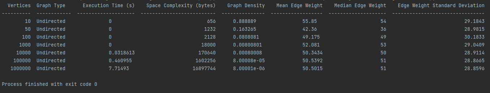
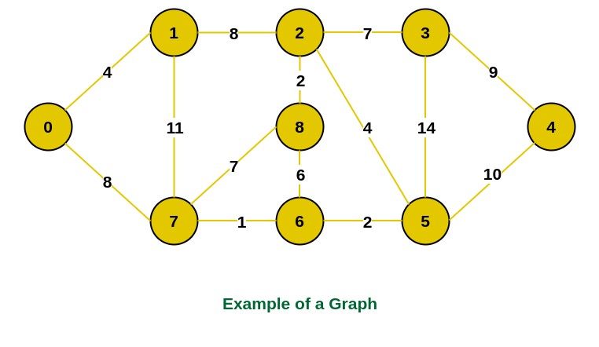
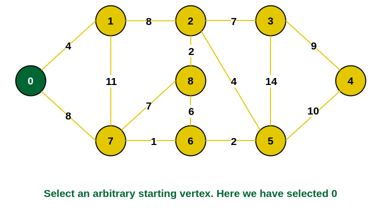
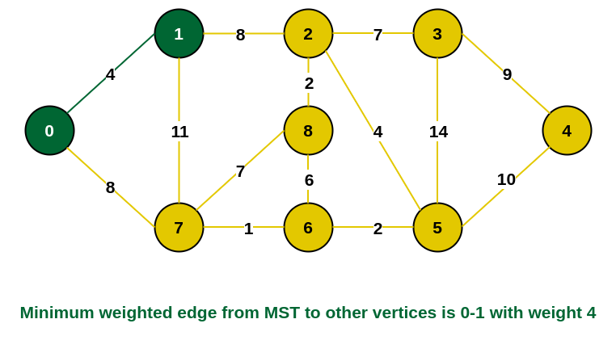
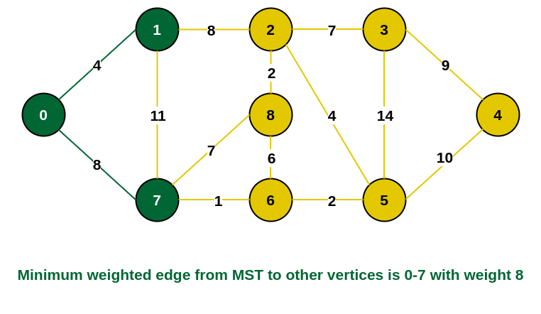
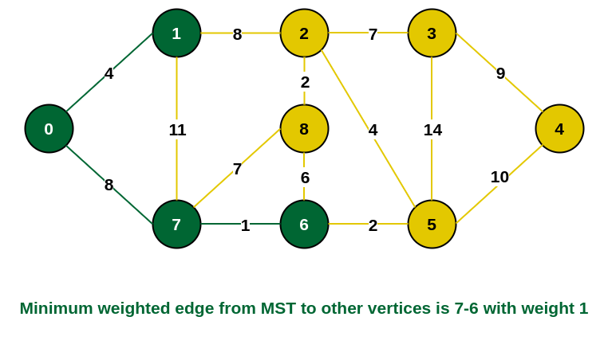
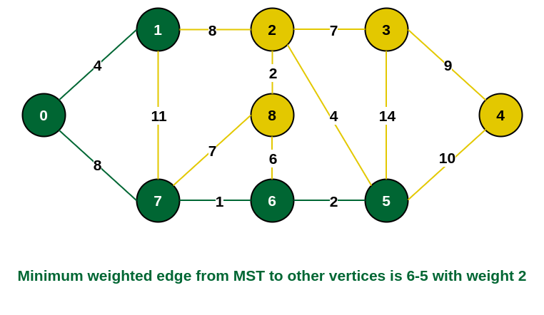
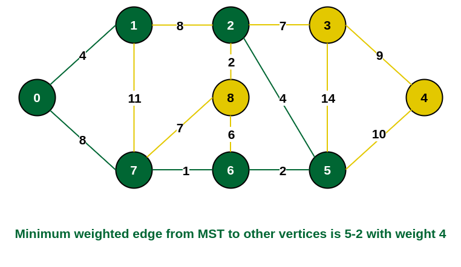
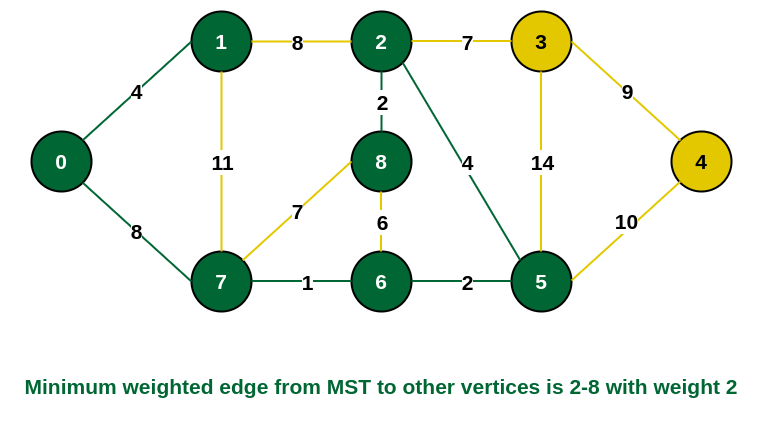
 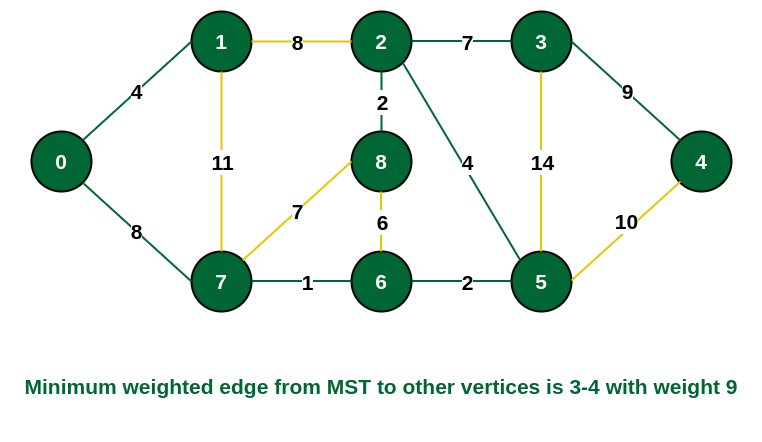
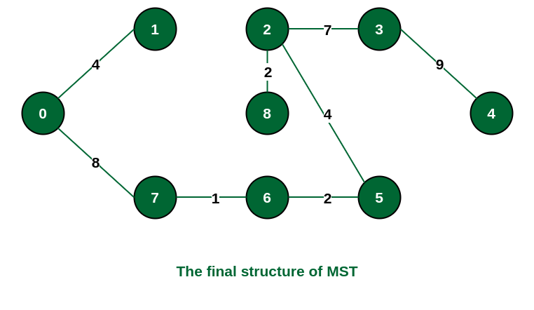
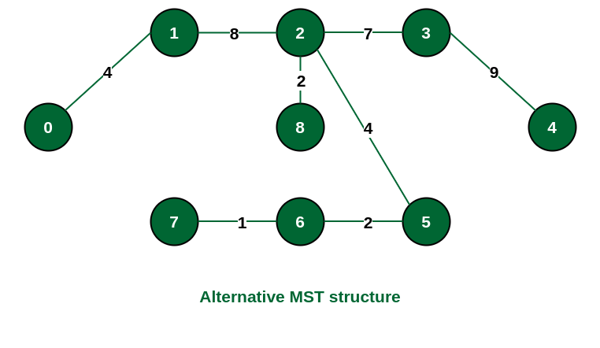
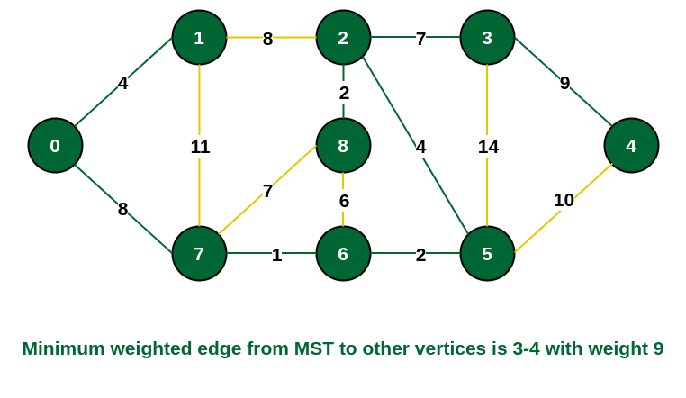
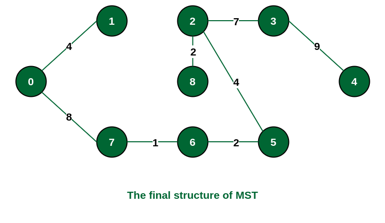
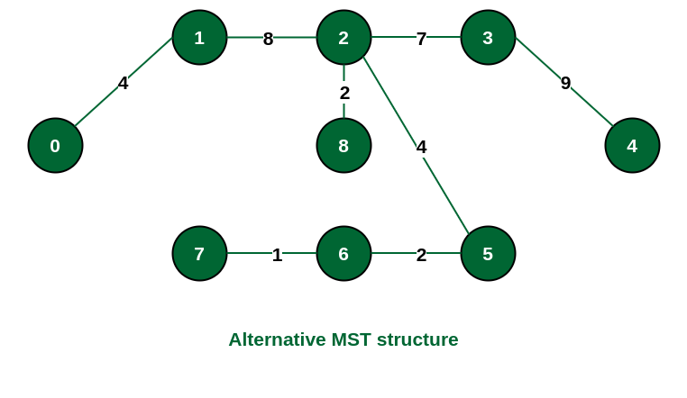
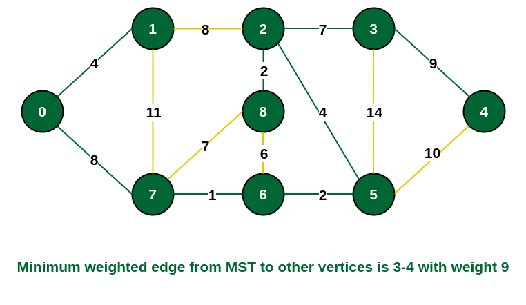
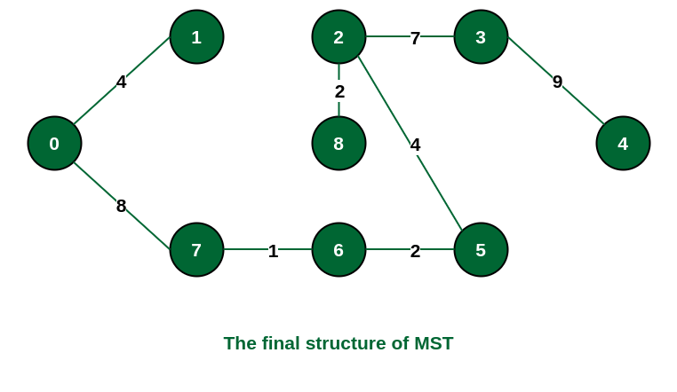
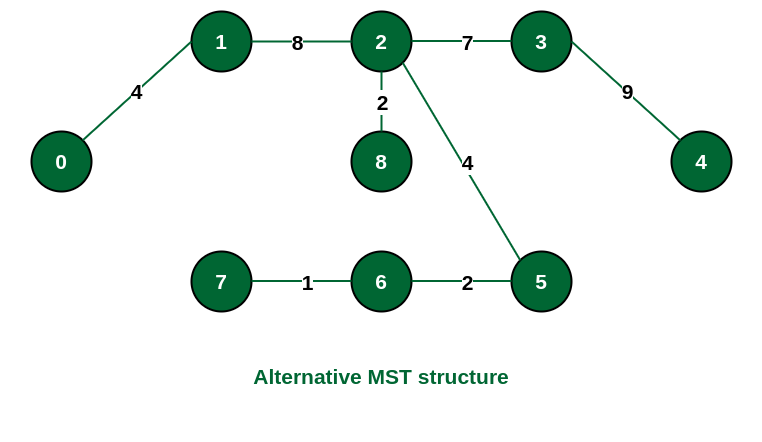
Time Complexity: O(V^2) with an adjacency matrix, O(E + V log V) with a priority queue
Space Complexity: O(V)
The execution time remains relatively constant even as the number of vertices increases. This indicates that Prim's algorithm has good scalability.
The space complexity increases as the number of vertices increases, which is expected. However, the increase is not too significant, indicating that the algorithm's space requirements are reasonable.
The graph density varies with the number of vertices. For smaller graphs (e.g., 10 vertices), the density is relatively high, but it decreases as the number of vertices increases. This is because the number of edges does not scale proportionally with the number of vertices.
These statistics provide insights into the distribution of edge weights in the graphs. In this case, the mean and median edge weights are relatively close, indicating a symmetric distribution. The standard deviation gives a measure of the spread of edge weights around the mean.
The execution time of Prim's algorithm remains relatively low and stable across different sizes of undirected graphs. This indicates that the algorithm's time complexity is efficient, as it scales well with increasing numbers of vertices. It performs particularly well even for large graphs with millions of vertices, as evident from the execution times being in the order of milliseconds to seconds.
The space complexity of Prim's algorithm also scales reasonably well with the number of vertices. While there is an increase in space requirements as the graph size grows, it does not exhibit a significant spike, indicating that the algorithm's space usage is manageable. The space complexity remains within acceptable bounds even for large graphs with millions of vertices, as seen from the space requirements being in the order of megabytes.
The execution time (in seconds) for finding the minimum spanning tree (MST) tends to increase with the number of vertices. However, the time complexity seems to remain reasonable, as it does not grow significantly faster than the number of vertices or edges.
The space complexity (in bytes) also increases with the number of vertices, but it generally seems to grow slower than the square of the number of vertices (V^2) for the adjacency matrix representation.
For the adjacency list representation with a priority queue, the space complexity grows with both the number of vertices and edges, but it appears to scale more efficiently than O(V^2).
When implemented using an adjacency matrix, the time complexity of Prim's Algorithm is O(V^2), where V is the number of vertices in the graph. In each iteration, we need to scan through all vertices to find the minimum edge that connects the visited and unvisited vertices. Since there are V vertices and for each vertex, we potentially check all other vertices (V), the time complexity becomes O(V^2).
When implemented using a priority queue (min-heap), the time complexity is reduced to O(E + V log V), where E is the number of edges in the graph. In each iteration, we select the minimum weight edge from the priority queue, which contains at most V vertices. Inserting and extracting the minimum element from the priority queue takes O(log V) time, and there are at most E such operations (as each edge is considered only once). Thus, the time complexity becomes O(E + V log V).
The space complexity of Prim's Algorithm is O(V) in both cases. This is because we need to maintain a data structure to keep track of the vertices that are already included in the MST. Typically, this data structure is implemented using an array or a set, which requires O(V) space to store the information about each vertex.
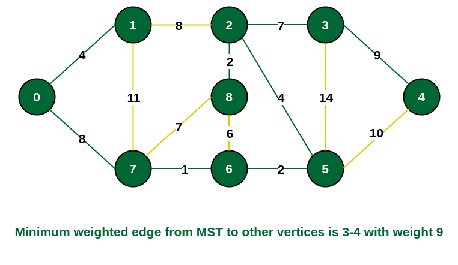
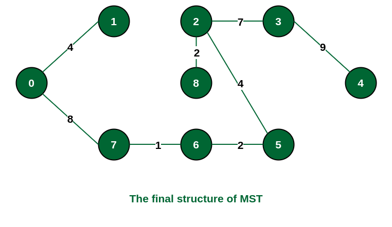
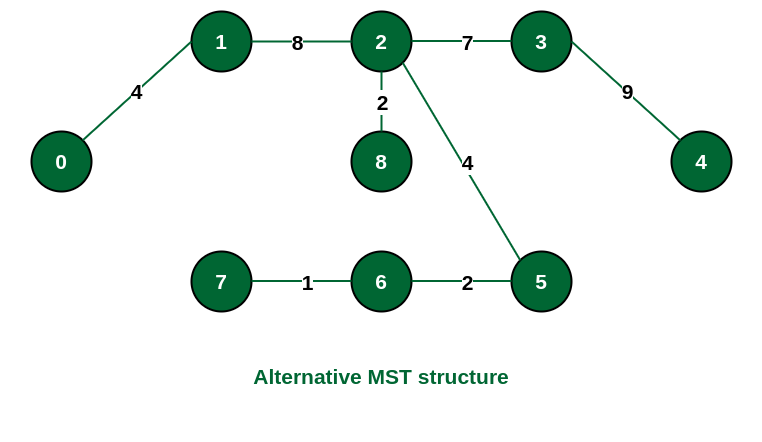
class Graph:
def __init__(self):
self.graph = defaultdict(list)
def add_edge(self, u, v, weight):
# Add an edge to the graph
self.graph[u].append((v, weight))
self.graph[v].append((u, weight)) # For undirected graph
def prim_mst(self, start):
mst_edges = [] # To store the edges of the Minimum Spanning Tree
visited = set() # To track visited vertices
pq = [(0, start)] # Priority queue to track candidate edges, initialized with the start vertex
while pq:
weight, vertex = heapq.heappop(pq) # Get the vertex with the minimum weight from the priority queue
if vertex not in visited: # If the vertex has not been visited
visited.add(vertex) # Mark the vertex as visited
# Explore its neighbors
for neighbor, neighbor_weight in self.graph[vertex]:
if neighbor not in visited: # If the neighbor is not already in the MST
heapq.heappush(pq, (neighbor_weight, neighbor)) # Add the neighbor to the priority queue
if pq: # If there are still edges to consider in the priority queue
min_weight, min_vertex = pq[0] # Get the next minimum weight edge
mst_edges.append((vertex, min_vertex, min_weight)) # Add the edge to the MST
return mst_edges # Return the edges of the Minimum Spanning Tree
class Graph: This line defines a class named Graph. Think of a class as a blueprint or template for creating objects. In this case, the Graph class will help us create objects that represent graphs.
def __init__(self): This line defines a special method called __init__. This method is automatically called when a new object of the class is created. The self parameter refers to the object itself, allowing us to access and modify its attributes.
self.graph = defaultdict(list): Inside the __init__ method, we create an attribute called graph for each object of the Graph class. This attribute is a dictionary (defaultdict) that will store the vertices and their corresponding edges. The list argument specifies that the values in the dictionary will be lists, which will store the neighboring vertices of each vertex.
Overall, this line of code initializes a data structure (defaultdict) to represent the graph structure, allowing us to easily add vertices and edges to the graph object when needed. It helps us organize and manage the data related to the graph within each object of the Graph class.
def add_edge(self, u, v, weight): This line defines the add_edge method, which takes three parameters: u, v, and weight. u and v represent the vertices that the edge connects, and weight represents the weight or cost of traversing the edge.
self.graph[u].append((v, weight)): This line adds a tuple (v, weight) to the list of edges associated with vertex u in the graph. The tuple (v, weight) represents an edge from vertex u to vertex v with the specified weight. This line effectively adds an outbound edge from vertex u.
self.graph[v].append((u, weight)): This line adds a tuple (u, weight) to the list of edges associated with vertex v in the graph. This is done to ensure that the graph is undirected. In an undirected graph, if there is an edge from u to v, there is also an edge from v to u, and both edges have the same weight. This line effectively adds an inbound edge to vertex v corresponding to the outbound edge from vertex u.
Overall, this method allows us to add edges between vertices in the graph, ensuring that both outbound and inbound edges are properly represented for undirected graphs. This helps maintain the symmetry of the graph and ensures that edges are correctly stored and accessible for graph traversal and analysis.
Imagine you have a map with cities (vertices) and roads (edges) connecting them. The add_edge function is like drawing a road between two cities on the map.
So, this function helps us build a map (graph) with cities and roads, making sure we record all the connections correctly in both directions.
mst_edges = []: We start with an empty list to store the edges of the Minimum Spanning Tree (MST). Think of it like a blank space where we'll put the edges of the tree.
visited = set(): We create an empty set to keep track of the vertices we've visited so far. This helps us avoid revisiting vertices and getting stuck in loops.
pq = [(0, start)]: We set up a priority queue (pq) to keep track of candidate edges, which are potential edges that could be added to the MST. It's like having a list of roads sorted by their length (weight), starting with the road from our initial city (start). This helps us pick the shortest road to explore next.
In simple terms, these lines set up the data structures we need to run Prim's Algorithm effectively: a place to store the edges of the MST, a record of visited cities, and a way to keep track of the shortest roads to explore next.
mst_edges = []: We start with an empty list to store the edges of the Minimum Spanning Tree (MST). It's like having a blank list where we'll write down the roads that make up our tree.
visited = set(): We create an empty set to remember which cities we've already visited. This helps us avoid going back to cities we've already explored.
pq = [(0, start)]: We set up a list to keep track of potential roads (edges) we could add to our MST. It starts with just one road from our starting city (start). Each road is listed along with its length (weight). This list helps us decide which road to take next, always choosing the shortest one available.
In simple terms, these lines help us prepare for Prim's Algorithm by getting ready to store the roads of the Minimum Spanning Tree, keeping track of which cities we've already been to, and listing the shortest roads to consider next.
Loop Through Priority Queue: We go through each road (edge) in the priority queue (pq). Roads are sorted by their length (weight), so we pick the shortest one first.
Explore Vertices: For each road, we look at the city (vertex) it leads to. If we haven't visited that city yet, we add it to our list of visited cities.
Consider Neighbors: We check the roads connected to the city we just visited. If we find a road to a new city that isn't already in our Minimum Spanning Tree (MST), we add it to the list of potential roads to explore.
Update MST: If there are still roads left in the priority queue after considering all options, we pick the shortest one and add it to our Minimum Spanning Tree.
Repeat Until Done: We keep doing this process until we've considered all possible roads and built our Minimum Spanning Tree.
Overall, this code helps us find the shortest path to connect all cities in our Minimum Spanning Tree, ensuring efficient communication between them.
Loop Through Roads: We look at each road (edge) one by one. These roads are sorted by their length (weight), so we always start with the shortest road.
Check City: For each road, we see which city (vertex) it leads to. If we haven't visited that city yet, we mark it as visited.
Look for New Roads: We check the roads connected to the city we just visited. If we find a road to a new city that isn't already in our tree (MST), we add it to the list of roads we're considering.
Add Shortest Road: If there are still roads left to consider, we pick the shortest one and add it to our tree (MST).
Repeat Until Done: We keep doing this until we've looked at all the roads and added the shortest ones to our tree.
This process helps us find the best way to connect all the cities with the shortest roads, making sure we have an efficient network for communication.
Prim's Algorithm is a method used to find the Minimum Spanning Tree (MST) of a connected, undirected graph. A Minimum Spanning Tree of a graph is a subgraph that contains all the vertices of the original graph and is a tree (i.e., acyclic) and connected, with the minimum possible total edge weight.
Prim's Algorithm ensures that the resulting Minimum Spanning Tree has the minimum total weight possible among all spanning trees of the graph. It is particularly efficient for sparse graphs (graphs with relatively few edges compared to the number of vertices) when implemented using a priority queue data structure. It's widely used in various applications such as network design, routing algorithms, and approximate solutions to NP-hard problems.
In many real-world scenarios, such as designing telecommunication networks or electrical grids, we need to connect various points while minimizing the total cost or length of the connections. Prim's Algorithm helps us find the minimum spanning tree, which represents the most efficient way to connect all points with the least total cost.
In computer networking, routers need to find the most efficient paths to transmit data between nodes. The minimum spanning tree found by Prim's Algorithm can help in constructing efficient routing tables or identifying backup routes in case of link failures.
In data analysis and clustering, finding hierarchical structures is crucial for understanding relationships between data points. Prim's Algorithm can be used to construct hierarchical structures based on similarities or distances between data points.
Prim's Algorithm serves as a fundamental component in various optimization problems, such as the Traveling Salesman Problem and the Steiner Tree Problem. By finding the minimum spanning tree, we can obtain approximate solutions to these NP-hard problems.
In resource allocation problems, such as scheduling tasks or assigning resources to minimize costs, finding efficient connectivity patterns is essential. Prim's Algorithm can be applied to model and solve such resource allocation problems efficiently.
Using a Priority Queue (Min-Heap): O(E + V log V)
Using a Priority Queue (Min-Heap): O(V)
Time Complexity (O(E + V log V)):
Space Complexity (O(V)):
Prim's Algorithm implemented using a priority queue has a time complexity of O(E + V log V) and a space complexity of O(V).
The time complexity is dominated by the operations performed on the priority queue, which efficiently select the minimum weight edge in each iteration.
The space complexity is primarily determined by the storage required to maintain information about the vertices in the MST.
A priority queue is a data structure that maintains a set of elements, each associated with a priority. It supports operations such as insertion, extraction of the element with the highest (or lowest) priority, and updating the priority of an element efficiently.
Prim's Algorithm requires efficiently finding the minimum weight edge in each iteration. A priority queue allows us to extract the minimum element efficiently, making it suitable for selecting the next edge to add to the Minimum Spanning Tree (MST). By maintaining the edges with their weights in the priority queue, Prim's Algorithm can achieve the optimal time complexity of O(E + V log V) when using a priority queue.
Priority queues can be implemented using various data structures, such as arrays (for simplicity), binary heaps (for efficient insertion and extraction), or Fibonacci heaps (for amortized O(1) extraction). The choice of priority queue implementation may depend on factors such as the size of the graph, the number of edges, and the desired efficiency.
Priority queues are commonly used in Prim's Algorithm implementations due to their efficiency in selecting the minimum weight edge, which is crucial for constructing the Minimum Spanning Tree with optimal time complexity.
Start with an arbitrary vertex as the initial Minimum Spanning Tree (MST). This can be any vertex from the graph. Mark this vertex as visited or included in the MST.
At each step, find the minimum weight edge that connects a vertex in the current MST to a vertex not yet in the MST. Add this minimum weight edge and its associated vertex to the MST. Mark this newly added vertex as visited or included in the MST.
Continue this process until all vertices are included in the MST, resulting in a minimum spanning tree.
The time it takes and the space it needs depend on how we set things up and how many points and connections there are. But generally, using a priority queue or adjacency list is faster and needs less space compared to an adjacency matrix.
Prim's Algorithm is a versatile tool for finding minimum spanning trees, especially in connected, weighted graphs with non-negative edge weights. However, it's essential to consider the specific characteristics and requirements of your problem when choosing the appropriate algorithm.
Overall, Prim's Algorithm plays a crucial role in designing and maintaining an efficient communication network for the Chandrayaan-3 mission, facilitating reliable data transmission between the lander, rover, and other mission components. It helps in optimizing communication routes, conserving energy, and ensuring fault tolerance, thereby supporting the success of the lunar exploration mission.
In essence, Prim's Algorithm acts as a smart navigator for communication, constantly finding the best paths for data transmission, conserving energy, and overcoming obstacles to ensure that the rover can effectively communicate with other parts of the mission.
Initially, we have the lander (L) on the Moon's surface, along with satellites (S) orbiting the Moon. The rover (R) is deployed from the lander and starts exploring the lunar surface.
(S)
|
|
|
(L)
/ \
/ \
/ \
(R)-----Satellites
Prim's Algorithm is employed to select the most efficient communication paths between the rover, lander, and satellites. It considers factors like signal strength, data rates, and latency to determine the best routes.
(S)
|
|
|
(L)
/ | \
/ | \
/ | \
(R)------Satellites
As the rover moves across the lunar surface, Prim's Algorithm dynamically adjusts the communication routes. It ensures that the rover remains connected to the lander and satellites for continuous data transmission.
(S)
|
|
|
(L)
/ | \
/ | \
/ | \
(R)------Satellites
|\
| \
| \
| \
(R)---Satellites
If there are communication disruptions due to obstacles or terrain, Prim's Algorithm finds alternative routes to maintain connectivity. It helps in overcoming communication challenges and ensures reliable data transmission.
(S)
|
|
|
(L)
/ | \
/ | \
/ | \
(R)------Satellites
|\
| \
| \
| \
(R)--(S)
Signal strength refers to the power or intensity of a signal transmitted from one point to another. In the context of communication, especially in space missions, it indicates how strong the signal is when it reaches its destination. A stronger signal is preferable because it reduces the chances of data loss or corruption during transmission.
Data rates, also known as data transfer rates or bit rates, refer to the speed at which data is transmitted between devices or over a network. It is measured in bits per second (bps) or multiples of bits per second like kilobits per second (kbps) or megabits per second (Mbps). Higher data rates mean that more data can be transmitted in a given amount of time, resulting in faster communication.
Latency, also known as delay, is the time it takes for a signal or data packet to travel from its source to its destination. It is usually measured in milliseconds (ms) and represents the time delay experienced by data as it traverses a communication network. Lower latency is desirable, especially in real-time communication scenarios, as it reduces the time delay between sending and receiving data.
Imagine you're talking to someone on the phone. If you're far away from a cell tower, your signal might be weak, and you'll hear crackling or your call might drop. That's low signal strength. But if you're close to the tower, your signal is strong, and your call is clear. In space missions, strong signals mean data can travel reliably between spacecraft and Earth.
Think of data rates like the speed of a car. If you're on a highway, you can drive faster and reach your destination quicker. Similarly, high data rates mean information can travel faster between devices. In space missions, high data rates mean spacecraft can send and receive data quickly, which is essential for transmitting images, scientific data, and commands.
Latency is like the time it takes for a letter to reach its destination through the mail. If you live close to the recipient, it arrives quickly. But if they're far away, it takes longer. In space missions, latency is the delay between sending a signal and receiving a response. Low latency means quick communication, which is vital for controlling spacecraft in real-time and avoiding accidents.
So, in simple terms, strong signals mean clear communication, high data rates mean fast data transfer, and low latency means quick responses. These factors are crucial for ensuring effective communication in space missions like Chandrayaan-3.
With an adjacency matrix: Imagine you have a chart showing all the distances between every pair of cities. With this matrix, checking for the shortest distance to a new city takes a long time because you have to look at every row and column. This is like Prim's Algorithm with an adjacency matrix, where it takes O(V2) time, where V is the number of cities (vertices).
With a priority queue: Now, imagine you have a list of roads sorted by their lengths, so you can quickly find the shortest one. This is like using a priority queue with Prim's Algorithm. It makes finding the shortest distance much faster, taking O(E + V log V) time, where E is the number of roads (edges).
Regardless of the method, the space needed for Prim's Algorithm is O(V), which means it grows with the number of cities (vertices) but not as fast as the time it takes. This space is used for keeping track of which cities are already in the tree and their distances.
In simpler terms, using an adjacency matrix makes Prim's Algorithm slower because it needs to check every distance, while using a priority queue makes it faster by sorting the distances. But no matter which method you use, the amount of space needed grows with the number of cities you're dealing with.
Jio plans to expand its network coverage to a new city with a rapidly growing population. The objective is to strategically place cellular towers to ensure reliable coverage and minimize infrastructure costs.
Optimizing the placement of cellular towers means finding the best locations to put them so that mobile phone users get good signal coverage and reliable connections wherever they go. This way, when making a phone call or using other communication services on a mobile phone, users can expect clear connections without dropouts or interruptions. Prim's Algorithm helps in figuring out where to put these towers so that everyone gets good service.
The purpose of Prim's Algorithm, when applied to cellular network planning, is to determine the best locations to install cellular towers so that everyone using a mobile phone can make calls and use communication services without experiencing faults, signal disturbances, or dropped calls. By strategically placing towers using Prim's Algorithm, mobile network operators aim to provide reliable coverage and ensure that users have a smooth and uninterrupted communication experience.
The primary purpose of Prim's Algorithm is to find the minimum spanning tree (MST) of a weighted graph. In the context of network design and optimization, including scenarios like cellular network planning or satellite constellation deployment, Prim's Algorithm is used to determine the optimal arrangement of network elements (such as towers or satellites) to achieve specific objectives, such as:
Overall, the purpose of Prim's Algorithm, when applied to network design and optimization, is to help engineers and planners make informed decisions about the placement and configuration of network elements to achieve specific performance objectives while minimizing costs and ensuring reliable connectivity for users.
Prim's Algorithm is a greedy algorithm used to find the minimum spanning tree (MST) of a weighted graph. Here's how it works step by step: